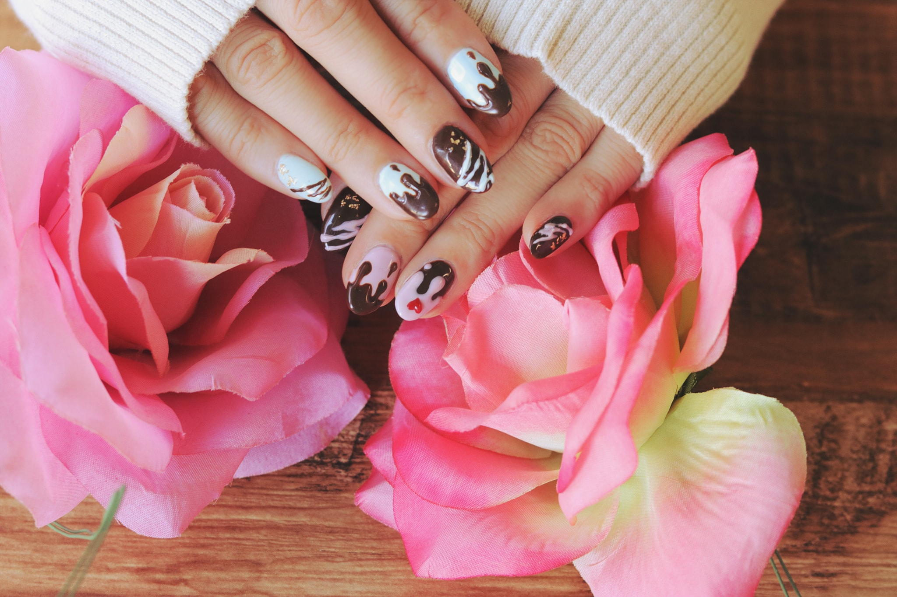
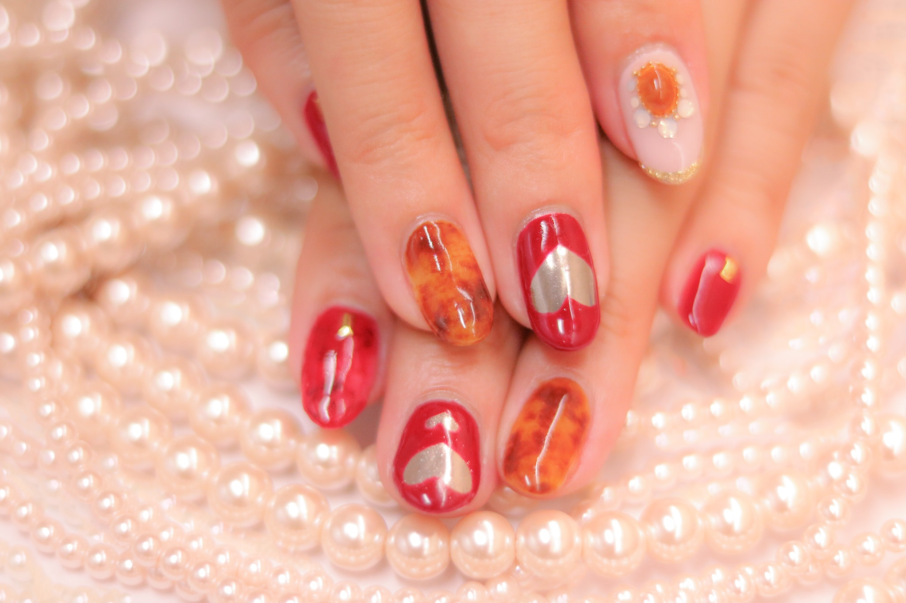

ジェルネイルとは
ジェルネイルとは流動性のある合成樹脂（粘液状）を爪に塗布し紫外線（UV-A）や可視光線（Vis）を照射して硬化する光重合（※ フォトポリマリゼーション）反応をネイル材料として爪に利用したものです。
※ フォトポリマリゼーション・・・重合（ポリマリゼーション）とは簡単な構造を持つ低分子化合物が２つ以上結合し、分子量の大きな高分子化合物（重合体＝ポリマー）を生成する反応のことです。光照射によって開始される反応が光重合（フォトポリマリゼーション）です。
【JNA ジェルネイル技能検定 ジェルネイルに関する基礎知識 より抜粋】
簡単に説明しますと、ジェルと呼ばれる粘液状のものを爪に塗り、専用のライト（UV/LED）をあて硬化させる人工爪のことです。
ランニングコストが安い
ジェルネイルを行う場合、主にサロンに行くかセルフで行うかの２択になります。
サロンで行う場合はお店やデザインにもよりますが大体3,000〜15,000円程かかります。またジェルの持ちは平均的に3週間から1ヶ月ですので、年間で考えるとかなりの高額になります。
一方セルフでジェルネイルを行う場合には、基本的なものを揃えたスターターキットが5,000〜10,000円であります。ジェルの色の追加購入やストーンなどのアート素材なども数百円程度で済むため、サロンに行くよりもはるかにランニングコストが安くなります。
サロン予約の時間を気にせずOK
サロンに行く場合に煩わしいのが時間。
予約しても急な残業で行けなくなってキャンセルしたり、爪1本だけ取れてしまい、そこだけ直しに行きたいと思っても急で予約がいっぱいだったり。
セルフでできるようになればそんな煩わしさから解放されます。
自分でやる楽しさ
セルフジェルネイルをする１番の魅力は何よりも自分でデザインすることの楽しさです。
今は色々なアイテムが販売されているため、不器用な方でもシールやストーンを使ってデザインを楽しむことができます。
最近では（後述しますが）スタンピングネイルなるものがあり、細かな模様なども楽しめます。
今話題のネイルアイテム
スタンピングネイル
マグネットネイル
こちらはポリッシュタイプとジェルタイプが分かれております。
ポリッシュやジェルの中に鉄粉が入っているため、乾かしたり硬化する前に磁石を当てることにより模様ができます。
また光の当たり具合によって見え方も変わり宇宙をイメージさせるようなきれいさがあります。
磁石に関してはマグネットネイル用に波型であったり、ライン状のものなどが販売されています。
- 
- 


注意すべきこと
10数年程前までは人工爪というとスカルプチュアが主流で、セルフで行うには高度な技術が必要だったため、あまりセルフで行う人は多くはありませんでした。しかし、ジェルネイルが出てきてからというものスカルプチュアよりも簡単にできることや、インターネットでの情報の普及によりセルフでネイルを楽しむ方が大変増えました。
確かにジェルはスカルプチュアよりも簡単ではありますが、どちらも科学物質を含んでいるため人体に悪影響を与える可能性があります。特にここ最近目立つのは、ジェルに含まれるHAMAと呼ばれるアレルギー誘発物質によるジェルネイルアレルギーです。一度発症すると現時点では完治が難しく、ジェルネイルを楽しめなくなってしまいます。アレルギーを発症しないための対策としてはジェルが皮膚についてしまった場合にはすぐに拭き取り洗い流すことが大切です。
セルフでジェルネイルを行う場合には正しい知識を理解した上で楽しむことをオススメします。
絵柄の彫られたプレートに通常のネイルポリッシュを垂らし、スクレーパーで余分なポリッシュを履いたのち、スタンパーと呼ばれるやや粘着性のあるシリコンに絵柄を写し、その名の通りスタンプするように爪に押すことで絵柄が写ります。
マニキュアネイルを楽しむ方も、ジェルネイルを楽しむ方もどちらでもお使いいただけます。
細かな模様が手先の器用でない方でも楽しめるためここ数年話題に取り上げられています。
100円ショップのキャンドゥでも販売されており一時期は売り切れになる程の人気でした。現在は在庫に余裕があるようですので手始めに100円ショップのもので試してみてはいかがでしょうか。